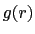
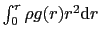
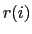
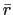
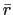

The measure command supplies several algorithms for analyzing molecular
structures. In the following options, selection refers to an atom
selection, as returned by the atomselect command described in section
9.3.2. The optional weight must be either
none, an atom selection keyword such as mass, or a list of values,
one for each atom in the selection, to be used as weights. If weight
is missing or is none, then all weights are taken to be 1. When
an atom selection keyword is used, the weights are taken from selection1.
- avpos selection [first first] [last last] [step step]:
Returns the average position of each of the selected atoms, for the
selected frames. If no first, last, or step values are
provided the calculation will be done for all frames.
- center selection [weight weight]:
Returns the geometric center of atoms in selection using the
given weight.
- cluster selection [num numclusters] [distfunc flag]
[cutoff cutoff] [first first] [last last] [step step]
[selupdate bool] [weight weight]:
Performs a cluster analysis (find clusters of timesteps that are
similar with respect to a given distance function) for the atoms
in selection using the given weight.
The implementation is based on the quality threshold (QT) algorithm.
See http://dx.doi.org/10.1101/gr.9.11.1106
and Cluster Analysis on Wikipedia
for more details
on the algorithm. Typically, only a small number of the largest clusters are
of interest. This implementation takes this into account and trades low
memory consumption on data sets with many frames for fast determination
of multiple clusters. Use the num keyword to adjust how many clusters
to determine (default is 5). The distfunc flag selects the
``distance function''; available options are 'rmsd' (root mean
squared atom-to-atom distance), 'fitrmsd' (root mean squared
atom-to-atom distance after alignment), and 'rgyrd' (difference
in radius of gyration). The cutoff flag defines the maximal
distance value between two frames that are considered similar
(default value is 1.0). The weight flag allows to use an
atom property, e.g. mass or radius, to be used as weighting factor
(default is no weighting). The command returns a list of numcluster + 1
lists, each containing the list of trajectory frame indices belonging to a
cluster of decreasing size. The last list contains the remaining, yet
unclustered frame indices.
- contacts cutoff selection1 [selection2]:
Find all atoms in selection1 that are within cutoff of
any atom in selection2 and not bonded to it. If selection2 is
omitted, it is taken to be the same as selection1. selection2
and selection1 can either be from the same of from different molecules.
Returns two lists of atom indices, the first containing the first index of
each pair (taken from selection1) and the
second containing the second index (taken from selection2).
Note that the index is the global index of the atom with respect to its
parent molecule, as opposed to the index within the given atom
selection that contains it.
- dipole selection [-elementary|-debye] [-geocenter|-masscenter|-origincenter]:
Compute the dipole moment vector of the atoms in selection from
their respective positions and charge values. The result by
default assumes charges given in units of an elementary charge
and distances in angstrom. By default the result is given in the
same units (same as using the -elementary flag), setting the
-debye flag will convert the output to units of Debye.
For selections that have a residual charge after summing up all
individual charges, the resulting dipole vector depends on the
choice of center of the charge distribution. By default, the center
will be the geometrical center of the selection (sames as using
the -geocenter flag), but using the selection's center of mass
through the -masscenter flag is available, as well as
using the origin via the -origincenter flag. Using -masscenter
is recommended, but not made default as it depends on the
mass value to be correctly set for all atoms.
- fit selection1 selection2 [weight weight] [order index list]:
Returns a 4x4 transformation matrix which, when applied to the atoms in
selection1, minimizes the weighted RMSD between selection1 and
selection2. See section 12.4.2 for more on RMSD
alignment. The optional flag order takes as argument a list of
0-based indices specifying how to reorder the atoms in selection2
(Example: To reverse the order of atoms in a selection containing 10 atoms
one would use order {9 8 7 6 5 4 3 2 1 0}).
- gofr selection1 selection2 [delta value] [rmax value] [usepbc boolean] [selupdate boolean] [first first] [last last] [step step]:
Calculates the atomic radial pair distribution function 
and the
number integral

for all pairs of
atoms in the two selections. Both selections have to reference the
same molecule and may be identical. In case one of the selections
resolves to an empty list for a given time step, and empty array is
added to the histograms. The command returns a list of five
lists containing
 ,
,
,
the unnormalized histogram, and a list of frame counters containing
currently 3 elements: total number of frames processed, the number
of skipped frames and the number of frames handled with the orthogonal
cell algorithm (Further algorithm and corresponding list entris will
be added in the future).
With the optional arguments delta (default 0.1) and rmax
(default 10.0) one can set the resolution and the maximum
value.
With the usepbc flag processing of periodic boundary conditions
can be turned on. With the selupdate flag enabled, both atom
selections are updated as each frame is processed, allowing productive
use of "within" selections. The size of the unitcell has to be stored in
the trajectory file or has to be set manually for all frames with the
molinfo command. The command uses by default only the current
active frame for both selections. Using an explicite frame range via
first, last, and step is recommended for most cases.
,
,
,
the unnormalized histogram, and a list of frame counters containing
currently 3 elements: total number of frames processed, the number
of skipped frames and the number of frames handled with the orthogonal
cell algorithm (Further algorithm and corresponding list entris will
be added in the future).
With the optional arguments delta (default 0.1) and rmax
(default 10.0) one can set the resolution and the maximum
value.
With the usepbc flag processing of periodic boundary conditions
can be turned on. With the selupdate flag enabled, both atom
selections are updated as each frame is processed, allowing productive
use of "within" selections. The size of the unitcell has to be stored in
the trajectory file or has to be set manually for all frames with the
molinfo command. The command uses by default only the current
active frame for both selections. Using an explicite frame range via
first, last, and step is recommended for most cases.
- hbonds cutoff angle selection1 [selection2]:
Find all hydrogen bonds in the given selection(s),
using simple geometric criteria. Donor and acceptor must be within the
cutoff distance, and the angle formed by the donor, hydrogen, and
acceptor must be less than angle from 180 degrees. Only non-hydrogen
atoms are considered in either selection. If both
selection1 and selection2 are given, the selection1 is
considered the donor and selection2 is considered the acceptor. If
only one selection is given, all non-hydrogen atoms in the selection are
considered as both donors and acceptors. The two selections
must be from the same molecule. The function returns three lists; each
element in each list corresponds to one hydrogen bond. The first
list contains the indices of the donors, the second contains the indices of
the acceptors, and the third contains the index of the hydrogen atom in
the hydrogen bond.
Known Issue: The output of hbonds cannot be considered 100% accurate if
the donor and acceptor selection share a common set of atoms.
- inverse matrix:
Returns the inverse of the given 4x4 matrix.
- minmax selection:
Returns two vectors, the first containing the minimum
 ,
,  , and
, and  coordinates of all atoms in selection, and the second containing the
corresponding maxima.
coordinates of all atoms in selection, and the second containing the
corresponding maxima.
- rgyr selection [weight weights]:
Returns the radius of gyration of atoms in selection using the
given weight. The radius of gyration is computed as
where 
is the position of the  th atom and 
is the weighted
center as computer by measure center.
th atom and 
is the weighted
center as computer by measure center.
- rmsd selection1 selection2 [weight weights]:
Returns the root mean square distance between corresponding atoms in
the two selections, weighted by the given weight. selection1 and
selection2 must contain the same number of atoms (the selections may
be from different molecules that have different numbers of atoms).
- rmsf selection [first first] [last last] [step step]:
Returns the root mean square position fluctuation for each selected
atom in the selected frames. If no first, last, or step values are
provided the calculation will be done for all frames.
- sasa srad selection [-points varname] [-restrict restrictedsel] [-samples numsamples]:
Returns the solvent-accessible surface area of atoms in the
selection using the assigned radius for each atom, extending
each radius by srad to find the points on a sphere that are
exposed to solvent. If the restrictedsel selection is used,
only solvent-accessible points near that selection will be considered.
The restrict option can be used to prevent internal protein
voids or pockets from affecting the surface area results. The points
option can be used to see where the area contributions are coming from,
and then the restrict flag can be used to eliminate any unwanted
contributions after visualizing them. The varname parameter
can be used to collect the points which are determined to be
solvent-accessible.
- sumweights selection weight weights:
Returns the sum of the list of weights (or data field to use for
the weights) for all of the atoms in the selection.
- bond atom_list [options]:
Returns the distance of the two specified atoms.
The atoms are specified in form of a list of atom indexes. Unless you specify
a certain molecule through 'molid molecule_number' these indices refer
to the current top molecule. If the atoms are in different molecules you can
use the form {{atomid1 [molid1]} {atomid2 [molid2]} ... }
where you can set the molecule ID for the individual atoms.
Note that measure bond does not care about the bond that are specified in a psf file or
that are drawn in VMD it just returns the distance! Similar things are true for
measure angle, dihed and imprp.
The following options can be specified:
- molid <default molid>: The default molecule to which an atom belongs unless
a molecule number was explicitely specified for this atom in the atom list. Further, all
frame specifications refer to this molecule.
(Default is the current top molecule.)
- frame <frame>:
By default the value for the current frame will be
returned but a specific frame can be chosen through this option. One can also
specify all or last instead of a frame number in order to get a
list of values for all frames or just the last frame respectively.
- first <frame>: Use this option to specify the first frame of a frame
range. (Default is the current frame.)
- last <frame>: Use this option to specify the last frame of a frame
range. (Default is the last frame of the molecule).
In case you specified the molecule IDs in the atom list then all frames
specifications will refer to the current top molecule unless a default molecule
was set using the 'molid' option.
Since the top molecule can be different from the molecules involved in the
selected atoms, it is generally a good idea to specify a default molecule.
Here are a few examples of usage:
measure bond {3 5} - Returns the distance between atoms 3 and 5 of the
current frame of the top molecule. measure bond {3 5} molid 1 frame all - Returns the distance between
atoms 3 and 5 of molecule 1 for all frames.
measure bond {3 {5 1}} molid 0 first 7 - Returns the distance between
atoms 3 of molecule 0 and atom 5 of molecule 1. The value is computed for all
frames between the seventh and the last frame of molecule 0.
- angle atom_list [options]:
Returns the angle spanned by three atoms. Same input format as the
measure bond command.
- dihed atom_list [options]:
Returns the dihedral angle defined by four atoms. Same input format as the
measure bond command.
- imprp atom_list [options]:
Returns the improper dihedral angle defined by four atoms. Same input format as the
measure bond command.
- energy energy_term atom_list [parameters] [options]:
Returns the specified energy term for a given set of atoms. The energy term must be one of
bond, angle, dihed, imprp, vdw or elect where
vdw stands for 'van der Waals' and elect for electrostatic energy.
The energy is computed based on the CHARMM force field functions,
the given parameters and the current coordinates. All options for the measure bond
command work for measure energy, too. Thus, you can for instance request energies
for a range of frames of a trajectory. Also the format of the atom list is the same.
The following parameters can be specified:
- k <value>: force constant for bond, angle, dihed and imprp energies in
kcal/mol/A
 or kcal/mol/rad
respectively.
or kcal/mol/rad
respectively.
- x0 <value>: equilibrium value for bond length, angle, dihedral angles and
improper dihedrals in Angstrom or degree.
- kub <value>: Urey-Bradley force constant for angles in kcal/mol/A
.
- s0 <value>: Urey-Bradley equilibrium distance for angles in Angstrom.
- n <value>: dihedral periodicity.
- delta <value>: dihedral phase shift in degree (usually 0.0 or 180.0).
- rmin1 <value>: VDW equilibrium distance for atom 1 in Angstrom.
- rmin2 <value>: VDW equilibrium distance for atom 2 in Angstrom.
- eps1 <value>: VDW energy well depth (epsilon) for atom 1 in kcal/mol.
- eps2 <value>: VDW energy well depth (epsilon) for atom 2 in kcal/mol.
- q1 <value>: charge for atom 1.
- q2 <value>: charge for atom 2.
- cutoff <value>: nonbonded cutoff distance.
- switchdist <value>: nonbonded switching distance.
For all omitted parameters a default value of 0.0 is assumed.
For the electrostatic energy the default charges are taken from the according
atom based field of the molecule. If the cutoff is not set or zero then no cutoff
function will be used.
- surface selection gridsize radius depth:
Returns a list of atom indices comprising the surface of the
selected atoms. The method for determining the surface is to
construct a grid with a spacing approximately equal to gridsize,
where each grid point is either marked full or empty, depending on
whether any atoms from the selection are within radius
distance of the grid point. If the periodic cell parameters are
defined in VMD, the molecule is considered periodic and the grid
reflects the coordinates of periodic images of the selection.
The grid size may be modified from that passed to the routine so
that an integer grid dimension fits the dimensions of the box
containing the molecule. Finally, each atom that falls within
depth distance of an empty grid point is considered a
surface atom, and the command returns a list of atom indices
for all such atoms.
- pbc2onc center [frame frame
last]:
Computes the transformation matrix that transforms coordinates from an arbitrary PBC cell
into an orthonormal unitcell. Since the cell center is not stored by VMD
you have to specify it.
Here is a 2D example of a nonorthogonal PBC cell:
A and B are the are the displacement vectors which are needed to create
the neighboring images. The parallelogram denotes the PBC cell with the origin O at its center.
The square to the right indicates the orthonormal unit cell i.e. the area into which the atoms
will be wrapped by transformation T.
+ B
/ + B'
_________/________ |
/ / / +---|---+
/ / / T | | |
/ O--------/-------> A ====> | O---|--> A'
/ / | |
/_________________/ +-------+
A = displacement vector along X-axis with length a
B = displacement vector in XY-plane with length b
A' = displacement vector along X-axis with length 1
B' = displacement vector along Y-axis with length 1
O = origin of the PBC cell
|
- pbcneighbors center cutoff [options]:
Returns all image atoms that are within cutoff Å of the PBC unitcell in form of two lists.
The first list holds the atom coordinates while the second one is an indexlist mapping the image
atoms to the atoms in the unitcell. Since the PBC cell center is not stored in DCDs and cannot
be set in VMD it must be provided by the user as the first argument.
The second argument (cutoff) is the maximum distance (in Å) from the PBC unit cell
for atoms to be considered. In other words the cutoff vector defines the region surrounding the
pbc cell for which image atoms shall be constructed (i.e. {6 8 0} means 6 Å for the direction
of A, 8 Å for B and no images in the C-direction).
The following options can be specified:
- molid <molecule_number>: The default molecule to which an atom belongs unless
a molecule number was explicitely specified for this atom in the atom list. Further, all
frame specifications refer to this molecule.
(Default is the current top molecule.)
- frame <frame>:
By default the value for the current frame will be
returned but a specific frame can be chosen through this option. One can also
specify all or last instead of a frame number in order to get a
list of values for all frames or just the last frame respectively.
- sel <selection>: If an atomselection is provided then only those
image atoms are returned that are within cutoff of the selected atoms
of the main cell. In case cutoff is a vector the largest value will be
used.
- align <matrix>: In case the molecule was aligned you can supply the
alignment matrix which is then used to correct for the rotation and shift of the pbc cell.
- boundingbox PBC
{<mincoord> <maxcoord>}: With this option the atoms are
wrapped into a rectangular bounding box. If you provide "PBC" as an argument then the
bounding box encloses the PBC box but then the cutoff is added to the bounding box.
Negative values for the cutoff dimensions are allowed and lead to a smaller box.
Instead you can also provide a custom bounding box in form of the minmax coordinates
(list containing two coordinate vectors such as returned by the measure minmax command).
Here, again, the cutoff is added to the bounding box.
- inertia selection [moments] [eigenvals]:
Returns the center of mass and the principles axes of inertia
for the selected atoms. If moments is set then the moments
of inertia tensor are also returned. With option eigenvals
the corresponding eigenvalues will be returned, too. If both
flags are set then the eigenvalues will be listed after the
moments.
- symmetry selection
[plane
I
Cn
Sn [vector]]
[tol value] [nobonds] [verbose level]:
This function evaluates the molecular symmetry of an atom selection.
The underlying algorithm finds the symmetry elements such as
inversion center, mirror planes, rotary axes and rotary reflections.
Based on the found symmetry elements it guesses the underlying
point group.
The guess is fairly robust and can handle molecules whose
coordinates deviate to a certain extent from the ideal
symmetry. The closest match with the highest symmetry will
be returned.
Options:
- tol <value>:
Allows one to control tolerance of the algorithm when
considering wether something is symmetric or not.
A smaller value signifies a lower tolerance, the default
is 0.1.
- nobonds:
If this flag is set then the bond order and orientation
are not considered when comparing structures.
- verbose <level>:
Controls the amount of console output.
A level of 0 means no output, 1 gives some statistics at
the end of the search (default). Level 2 gives additional
info about each stage, and 2, 3, 4 yield even more info
for each iteration.
- idealsel <selection>:
The symmetry search will be performed on the regular
selection but then the found symmetry elements will be
imposed on the selection given with this option an the
search is repeated with this second selection. This method
allows, for example, to perform the symmetry guess on a
selection without hydrogens (which might point in random
directions for rotable groups) but still get the ideal
coordinates and unique atoms for the entire structure.
The selection specified here must be a superset of the
selection used for the symmetry search.
- I:
Instead of guessing the symmetry pointgroup of the selection
determine if the selection's center off mass represents an
inversion center. The returned value is a score between 0
and 1 where 1 denotes a perfect match.
- plane <vector>:
Instead of guessing the symmetry pointgroup of the selection
determine if the plane with the defined by its normal
vector is a mirror plane of the selection. The
returned value is a score between 0 and 1 where 1 denotes
a perfect match.
- Cn
Sn <vector>:
Instead of guessing the symmetry pointgroup of the selection
determine if the rotation or rotary reflection axis Cn/Sn
with order n defined by vector exists for the
selection. E.g., if you want to query wether the Y-axis
has a C3 rotational symmetry you specify C3 {0 1 0}.
The returned value is a score between 0 and 1 where 1
denotes a perfect match.
- imposeinversion:
Impose an inversion center on the structure.
- imposeplanes {<vector> [<vector> ...]}:
Impose the planes given by a list of normal vectors on the
structure.
- imposeaxes|imposerotref {<vector> order [<vector> order ...]}:
Impose rotary axes or rotary reflections on the structure
specified by a list of pairs of a vector and an integer.
Each pair defines an axis and its order.
The scores for the individual symmetry elements depend on the
specified tolerance.
Imposing symmetry elements on a structure will wrap the atoms
around these elements and average the coordinates of the atoms
and its images. Atoms for which no image is found (with respect
to that transformation) will not be wrapped. I.e. if you, for
instance, impose an axis on a molecule that has no such rotary
symmetry within the given tolerance then nothing will happen.
Result:
The return value is a TCL list of pairs consisting of a label
string and a value or list. For each label the data following
it are described below:
- pointgroup
- The guessed point group. For point groups
that have an order associated with it, like C3v or D2, the
order is replaced by 'n' and we have Cnv or Dn. The order
is given separately (see below).
- order
- Point group order, i.e. order of highest axis
(0 if not applicable).
- elements
- Summary of found symmetry elements, i.e.
inversion center, rotary axes, rotary reflections,
mirror planes. Example: ``(i) (C3) 3*(C2) (S6) 3*(sigma)''
for point group D3d.
- missing
- Elements missing with respect to ideal set
of elements (same format as above). If this is not an empty
list then something has gone awfully wrong with the symmetry
finding algorithm.
- additional
- Additional elements that would not be
expected for this point group (same format as above).
If this is not an empty list then something has gone
awfully wrong with the symmetry finding algorithm.
- com
- Center of mass of the selection based on the idealized
coordinates (see 'ideal' below).
- inertia
- List of the three axes of inertia, the eigenvalues
of the moments of inertia tensor and a list of three 0/1 flags
specifying for each axis wether it is unique or not.
- inversion
- Flag 0/1 signifying if there is an inversion center.
- axes
- Normalized vectors defining rotary axes
- rotreflect
- Normalized vectors defining rotary reflections
- planes
- Normalized vectors defining mirror planes.
- ideal
- Idealized symmetric coordinates for all atoms of
the selection. The coordinates are listed in the order of
increasing atom indices (same order asa returned by the
atomselect command ``get x y z''). Thus you can use the list
to set the atoms of your selection to the ideal coordinates
(see example below).
- unique
- Index list defining a set of atoms with unique
coordinates.
- orient
- Matrix that aligns molecule with GAMESS standard
orientation.
If a certain item is not present (e.g. no planes or no axes)
then the corresponding value is an empty list.
The pair format allows to use the result as a TCL array for
convenient access of the different return items.
Example:
set sel [atomselect top all]
# Determine the symmetry
set result [measure symmetry $sel]
# Create array 'symm' containing the results
array set symm $result
# Print selected elements of the array
puts $symm(pointgroup)
puts $symm(order)
puts $symm(elements)
puts $symm(axes)
# Set atoms of selection to ideally symmetric coordinates
$sel set {x y z} $symm(ideal)